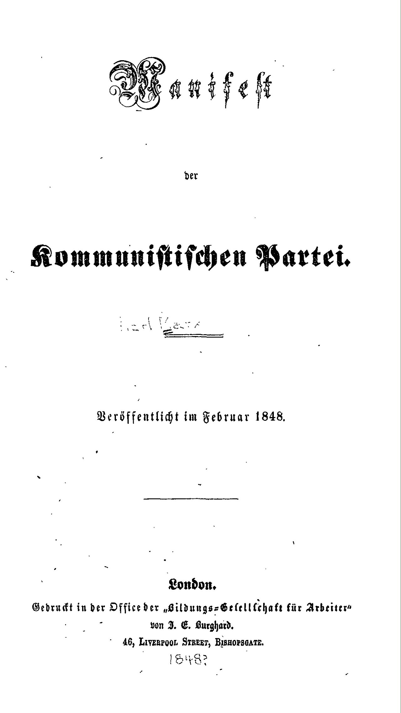
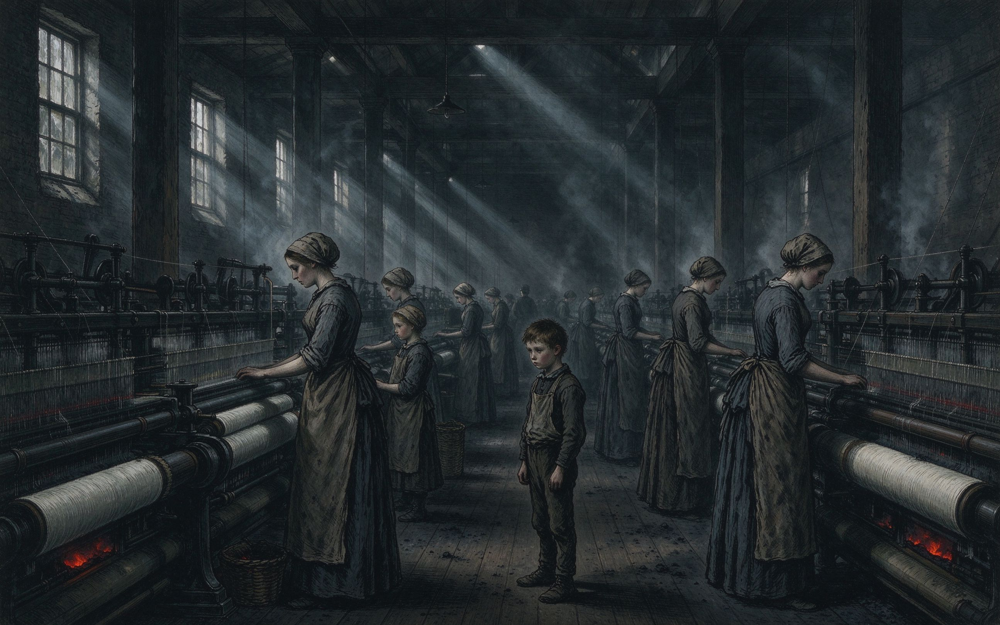

从街头抗争到政治组织
沿里昂、宪章运动、第一国际、巴黎公社到 1917 年，比较组织形式如何变化。
专题入口 13 个空间
从 1831 年里昂街垒走到 1917 年彼得格勒。沿着城市、组织、报刊与行动，走进工人运动如何跨越地方，成为改变时代的力量。
自动推进 · 生产条件 → 理论自觉 → 组织实践 → 认识方法
自动导览不按事件清单往前赶，而是从生产条件出发，追踪理论如何形成、如何进入组织实践，以及历史认识如何继续开放。
三种读法
每条路线约 10–15 分钟。随时可跳转，展品和史料页都能回到主线。
沿里昂、宪章运动、第一国际、巴黎公社到 1917 年，比较组织形式如何变化。
读《共产党宣言》初版，再对照《新青年》与其他刊物期号，观察思想如何进入公共讨论。
沿巴黎公社的日期切片查看法令、行动地点和战争压力，区分制度主张与实际执行。
E1 · 原始材料
当时出版的书报、文书、照片或馆藏扫描。优先追到来源机构与原件页面；本馆当前没有历史场景的实测扫描。
E2 · 多源佐证
由多个可追溯来源相互支持的历史信息。证据等级表示依据类型，不代表内容重要性或可信度的简单分数。
E3 · 有据阐释
依据单张图像、文字记载或可靠图纸形成的解释，保留不确定性，不将推断伪装成实测。
E4 · 推断性复原
单图生成模型默认以线框呈现；点击可查看实体化渲染，但显示方式不会提升证据等级。它是帮助理解的思想模型，不是历史实物。
向下滚动，地图镜头随叙事分节移动；每一节聚焦一座城市并显示一个历史现场。金色行进点只在新增章节时沿新路段移动，抵达本章地点后停下，表示历史主线推进；地图使用真实海岸线与国界（Natural Earth 110m），墨卡托投影；城市位置为真实经纬度，历史事件的具体发生点仍属示意。
《共产党宣言》作为可进入的文本空间：切换定稿、删改、旁注时，文字显影对应文本版本之间的差异；四种语言的并置追踪口号传播；选择年代，词云显示相关概念的历史关注变化。原刊扫描入口与史料说明另列，便于区分原文、策展解释和视觉表达。
巴塞尔大学图书馆保存的 1848 年伦敦德文初版数字副本，共 23 页。点击下方入口可在原馆藏阅读器翻页、缩放；在线馆藏需连接互联网。扫描许可：Public Domain Mark。

READ INLINE · 在线阅读
左为 1848 年伦敦版德文原文（公有领域），右为本项目自译；下方是逐句批注。不需要跳转到外部站点。
人物、组织与报刊构成一张随年代生长的关系网。可按关系社区、实体类型、年代阶段或城市切换聚类；节点名称常显，选中节点查看相邻关系，年代轴筛选网络发展。切换聚类时节点只短暂归位，之后停住，方便比较各类关系结构。
左侧选择报刊；《新青年》可沿真实卷期与原刊扫描胶卷拖动探索。居中的封面表示当前期号，点击后阅读原刊、查看目录与主题文章。封面聚焦只用于标明阅读位置，不替代史料信息；未找到扫描的期号会明确标注缺期，不以示意图替代。
拖动中央分割线，在同一时代的两种现实之间切换：一侧是占有生产资料的人，一侧是出卖劳动力的人。对照为历史结构性示意，具体工时与工资以国别史料为准。

MORE DIMENSIONS · 再看八个维度
从 3 月 18 日到 5 月 28 日，七十二天被整理为七个有记载的时间片。手动选日或启动播放后，地点、法令和事件说明同步更新；切片切换时扩散的红圈标出新激活地点，红点代表该片段有记载的行动地点，不表示战斗强度。每片附有开放问题，引导比较公社的制度实践与战争压力。
环境声场由浏览器实时合成，默认静默、由用户开启；宣言节选使用系统语音逐句朗诵，文字随播放高亮。声音是背景，不抢占视觉主线。
波形实时反映合成声场的振幅；静默时保持基线。声场包含印刷节奏脉冲、低频集会嗡鸣与轻微白噪，可随时关闭；朗读文字按句高亮，便于把听到的内容和原文对应起来。
点击任意一句开始朗读；朗读由浏览器内置语音完成，无外部音频文件。
这条时间河流讲述工人运动如何从城市抗争走向跨国组织，再进入革命与政党政治。横向严格按年代排列，节点是转折事件；选择或播放时，金色行进点从前一事件移到后一事件，显示组织与政治实践如何跨越时间。
金色行进点连接相邻转折；位置间距按真实年份比例绘制。每个节点停留 4 秒，阅读事件后可暂停或继续。
选择年代，观察工人行动、组织和革命事件如何分布在不同城市。光晕用于引导视线，数字等级是本展的策展标记，不是统一口径的罢工次数、参与人数或跨国统计指数。
逐处区分现存遗址扫描、现存建筑扫描、当代地形底图与已消失场景的史料约束复原。沿同址证据时间切片浏览复原与现状；巴黎点云可扩展到街区、城区和区域尺度。各期模型独立加载并保留来源，不把资料缺失年代伪造成连续动画。
进入高保真实景扫描工作台 →导入遗址实拍重建的 Gaussian Splat（PLY / SPZ / SOG 等）；没有扫描文件时可先查看采集与复原流程。
进入全国尺度 3D Tiles 空间工作台 →按视点加载全国多城市建筑索引或东京千代田区街区模型，查看全国、城市与街区的尺度关系。现状模型仅作空间参照，不冒充历史复原。
从城市里的劳动者，到跨越国界的组织与思想，历史由无数人的行动共同塑造。光丝从共同的历史现场向不同方向延伸；最后留下的问题，交给今天的观众继续追问。
城市、组织、文本与行动在这里交织成开放的历史关系。它不替历史盖棺定论，而是把问题留给新的实践：哪些关系延续了，哪些条件改变了，新的联合又如何形成？
「无产阶级在这个革命中失去的只是锁链。他们获得的将是整个世界。」——《共产党宣言》，1848